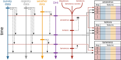
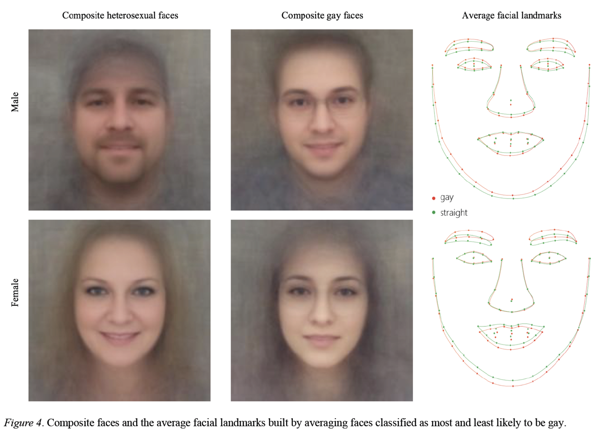
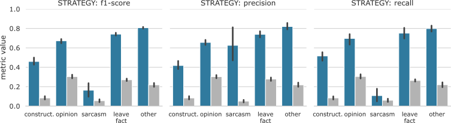

Micro-Degree Artificial Intelligence and Society
– Technical Aspects of AI –
Lecture 2.6: Summary Supervised Learning


Disease Prediction in Cows
- Goal: Prediction of diseases in cows based on the most diverse data possible.
- Challenge: Integration of very different data sets.
- Result: moderate (ketosis, F1 = 0.52) to good (anoestrus, F1 = 0.74) performance.

Illustration of the integration of various data sources distributed over time.
See also Lasser et al., J. Animal. Sci. (2021).
See also Lasser et al., J. Animal. Sci. (2021).
Classification of Sexual Orientation
- Goal: Classification of sexual orientation from images from a dating site.
- Result: The classifier delivers good performance. The authors interpret this as evidence that sexual orientation can be read from faces.
- Criticism: It is very likely that face orientation and facial hair are indicative of sexual orientation and the algorithm learned that.

Source: Wang & Kosinski J. Pers. Soc. Psychol. (2017).
See also: Calling bull, machine learning about sexual orientation?.
See also: Calling bull, machine learning about sexual orientation?.
Identification of Counter-Speech Strategies
- Goal: Measure the effectiveness of various counter-speech strategies against hate speech.
- Challenge: very elusive classes such as sarcasm.
- Result: Classification is good enough to see a trend on average across the very large dataset (1.3 million Tweets).

Performance of the classifier for counter-speech strategies. See also Lasser & Herderich et al., arXiv (2024).
Summary
- With supervised learning, we can train an algorithm to recognize known patterns.
- There are different algorithms for supervised learning such as Naive Bayes or decision trees.
- We measure the performance of supervised learning algorithms with accuracy or F1 score (classification) and the mean squared error (regression).
- Performance strongly depends on the training data and the choice of model and its (hyper)parameters. Missing data and skewed training data can lead to bias (underfitting) and variance (overfitting) in the results.
- To faithfully assess the performance of a supervised learning algorithm, always only use the test data that was not used for training the algorithm.
Outlook Next Lecture
- Unsupervised Learning: when we don't have any target values and need to orient ourselves in large datasets.
- Dimensionality Reduction: when we simply have too many attributes in our dataset.
- Reinforcement Learning: when we need to navigate in a complex environment.